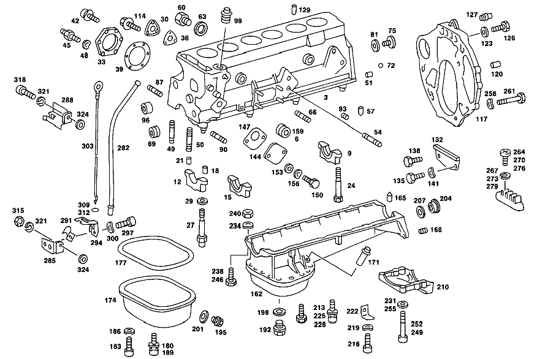

| № | Артикул | Название | Кол. | Примечание | Ограничение |
|---|---|---|---|---|---|
| 3 | A 110 010 80 08 | БЛОК ЦИЛИНДРОВ | 1 | ||
| 6 | A 094 990 01 06 | - Резьбовая пробка | 2 | ЗАГЛУШКИ ЛИТЫХ ОТВЕРСТИЙ [402] БОЛЬШЕ НЕ ПОСТАВЛЯЕТСЯ | |
| 9 | A 110 011 00 14 | - КРЫШКА ПОДШ. КОЛЕНВАЛА | 1 | [402] БОЛЬШЕ НЕ ПОСТАВЛЯЕТСЯ | |
| 12 | A 108 011 02 11 | - Крышка подшипника | 5 | ||
| 15 | A 108 011 01 13 | - КРЫШКА ПОДШ. КОЛЕНВАЛА | 1 | [402] БОЛЬШЕ НЕ ПОСТАВЛЯЕТСЯ | |
| 18 | N 000007 010102 | - Цилиндрический штифт | 7 | ||
| 21 | N 000007 008101 | - Цилиндрический штифт | 7 | ||
| 24 | A 108 011 01 71 | БОЛТ | 12 | ||
| 27 | A 108 011 00 71 | БОЛТ | 2 | ||
| 30 | A 130 015 00 05 | Крышка цилиндра | 3 | ||
| 33 | A 180 015 08 05 | - Крышка цилиндра | 2 | СТОРОНА СТАРТЕРА | |
| 36 | A 110 015 00 21 | Уплотнительная прокладка | 3 | ||
| 39 | A 180 015 10 21 | - ПРОКЛАДКА УПЛОТНИТЕЛЬНАЯ | - | ||
| 39 | A 110 015 01 21 | - Уплотнительная прокладка | 2 | ГОЛОВКА ЦИЛИНДРА К БЛОКУ ЦИЛИНДРОВ | |
| 42 | N 000000 000009 | Винт с неспадающей шайбой | 18 | M6X12 | |
| 45 | A 180 072 01 81 | - Палец | 2 | ДЕРЖАТЕЛЬ ЖГУТА ПРОВОДКИ Рулевое управление: Вправо | |
| 48 | N 000137 006204 | - Пружинная шайба | 2 | ДЕРЖАТЕЛЬ ЖГУТА ПРОВОДКИ Рулевое управление: Вправо | |
| 49 | N 000939 008136 | - Винт | 2 | МАСЛ.КАРТЕР К БЛОКУ ЦИЛ. ДВИГ. | |
| 50 | N 000939 008135 | - Винт | 1 | OIL PAN AND ALTERNATOR SUPPORT STRUT TO CYLINDER CRANKCASE | |
| 51 | A 180 991 01 60 | - Штифт | 2 | ПРОМЕЖУТ. ФЛАНЕЦ НА БЛОКЕ ЦИЛ. | |
| 54 | N 000939 008125 | - Винт | 1 | МАСЛОПРОВОД НА БЛОКЕ ЦИЛ. [402] БОЛЬШЕ НЕ ПОСТАВЛЯЕТСЯ | |
| 57 | A 186 991 00 55 | - Стопорный штифт | 1 | КРЕПЛЕНИЕ ТКАНЕВ.УПЛОТНИТЕЛЬНОГО КОЛЬЦА | |
| 60 | N 007604 014106 | - Резьбовая пробка | - | ||
| 60 | A 094 990 16 08 | - Резьбовая пробка | 1 | СЛИВ ВОДЫ | |
| 63 | A 636 997 02 44 | - Уплотнительное кольцо | 1 | СЛИВ ВОДЫ | |
| 66 | N 000939 010011 | Шпилька | 7 | ||
| 66 | N 000939 010027 | - Шпилька | 1 | КРОНШТЕЙН ОПОРЫ ДВИГАТЕЛЯ НА БЛОКЕ ЦИЛИНДРОВ | |
| 72 | A 094 990 49 07 | - Шар | 2 | МАСЛ.КАНАЛ СЗАДИ | |
| 87 | N 000939 008145 | - Винт | 4 | КРОНШТЕЙН ГЕНЕРАТОРА | |
| 90 | N 000939 010084 | - Шпилька | 1 | SERVO\-PUMP STAY | |
| 93 | N 915014 006101 | - Стопор | 1 | СМАЗОЧНОЕ ОТВЕРСТИЕ СБОКУ [402] БОЛЬШЕ НЕ ПОСТАВЛЯЕТСЯ | |
| 96 | A 110 052 01 06 | - Втулка подшипника | 1 | ВАЛ ПРОМЕЖУТОЧНОЙ ШЕСТЕРНИ | |
| 99 | A 180 150 01 07 | - Подшипник | 1 | IGNITION DISTRIBUTOR AND OIL PUMP DRIVE [402] БОЛЬШЕ НЕ ПОСТАВЛЯЕТСЯ | |
| 114 | N 914020 006009 | Винт с неспадающей шайбой | - | ||
| 114 | N 000000 000009 | Винт с неспадающей шайбой | 3 | ГОЛОВКА ЦИЛИНДРА К БЛОКУ ЦИЛИНДРОВ M6X12 | |
| 117 | A 615 011 02 45 | Промежуточный фланец | 1 | РЕМОНТ. ИСПОЛНЕНИЕ | |
| 120 | N 000007 010100 | Цилиндрический штифт | 2 | ФЛАНЕЦ ПРОМЕЖУТОЧНЫЙ | |
| 123 | N 000125 010518 | Шайба | - | ||
| 123 | N 000125 010532 | Шайба | 4 | ||
| 126 | N 000933 010164 | Винт | 4 | ||
| 127 | A 110 997 00 86 | ЗАГЛУШКА | 2 | ФЛАНЕЦ ПРОМЕЖУТОЧНЫЙ [402] БОЛЬШЕ НЕ ПОСТАВЛЯЕТСЯ | |
| 129 | A 110 991 00 41 | РАЗГРУЗ.ВТУЛКА | 2 | ГОЛОВКА БЛОКА ЦИЛИНДРОВ К БЛОКУ ЦИЛИНДРОВ ДВИГ. | |
| 132 | A 111 250 04 56 | ЗАЩИТНАЯ ПАНЕЛЬ | - | ||
| 132 | A 615 250 51 56 | Щиток | 1 | ||
| 135 | N 000933 006103 | Винт | - | ||
| 135 | N 304017 006018 | Винт с 6-гранной головкой | 2 | M6X12 | |
| 144 | A 114 011 00 32 | КРЫШКА | 1 | ТОПЛИВНЫЙ [402] БОЛЬШЕ НЕ ПОСТАВЛЯЕТСЯ | |
| 147 | A 180 091 01 80 | Уплотнительная прокладка | 1 | ТОПЛИВНЫЙ | |
| 150 | N 000933 008152 | Винт | - | ||
| 150 | N 304017 008027 | Винт с 6-гранной головкой | 2 | ТОПЛИВНЫЙ | |
| 153 | N 000125 008418 | Шайба | - | ||
| 153 | N 000125 008443 | Шайба | 2 | ТОПЛИВНЫЙ; 8 MM | |
| 162 | A 110 010 21 13 | МАСЛЯНЫЙ КАРТЕР | 1 | ||
| 165 | A 186 991 00 55 | - Стопорный штифт | 1 | ||
| 168 | N 900195 010109 | - Резьбовая вставка | 2 | ||
| 171 | A 110 187 04 28 | - ШТУЦЕР | 1 | ||
| 174 | A 123 010 00 28 | - Поддон масляный | 1 | НИЖНЯЯ ДЕТАЛЬ [175] FROM ENGINE 922 10/50,20/60 024636 922 12/52,22/62 041886 932 10/50,20/60 004482 932 12/52,22/62 000854 | |
| 177 | A 108 014 00 80 | - ПРОКЛАДКА УПЛОТНИТЕЛЬНАЯ | - | ||
| 177 | A 617 014 01 80 | - Уплотнительная прокладка | 1 | [402] БОЛЬШЕ НЕ ПОСТАВЛЯЕТСЯ | |
| 180 | N 914020 006000 | - Винт с неспадающей шайбой | - | ||
| 180 | A 001 990 93 12 | - БОЛТ | 17 | НИЖНЯЯ ЧАСТЬ МАСЛ.КАРТЕРА К ВЕРХНЕЙ ЧАСТИ МАСЛ.КАРТЕРА | |
| 183 | N 000912 006022 | - Винт | 2 | НИЖНЯЯ ЧАСТЬ МАСЛ.КАРТЕРА К ВЕРХНЕЙ ЧАСТИ МАСЛ.КАРТЕРА; M6X22 | |
| 186 | N 000137 006204 | - Пружинная шайба | 2 | НИЖНЯЯ ЧАСТЬ МАСЛ.КАРТЕРА К ВЕРХНЕЙ ЧАСТИ МАСЛ.КАРТЕРА | |
| 195 | A 123 997 04 30 | - ЗАГЛУШКА РЕЗЬБОВАЯ | - | ||
| 195 | A 002 997 34 30 | - Резьбовая пробка | 1 | СЛИВ МАСЛА [175] FROM ENGINE 922 10/50,20/60 024636 922 12/52,22/62 041886 932 10/50,20/60 004482 932 12/52,22/62 000854 | |
| 201 | N 007603 012110 | - Уплотнительное кольцо | 1 | [175] FROM ENGINE 922 10/50,20/60 024636 922 12/52,22/62 041886 932 10/50,20/60 004482 932 12/52,22/62 000854 | |
| 213 | N 914020 006000 | Винт с неспадающей шайбой | - | ||
| 213 | A 001 990 93 12 | БОЛТ | 15 | МАСЛ.КАРТЕР К БЛОКУ ЦИЛ. ДВИГ. | |
| 216 | N 000912 006022 | Винт | 1 | МАСЛ.КАРТЕР К БЛОКУ ЦИЛ. ДВИГ.; M6X22 | |
| 219 | N 000137 006204 | Пружинная шайба | 1 | МАСЛ.КАРТЕР К БЛОКУ ЦИЛ. ДВИГ. | |
| 222 | A 110 141 45 40 | ДЕРЖАТЕЛЬ | 1 | КРОНШТЕЙН К МАСЛЯНОМУ КАРТЕРУ [402] БОЛЬШЕ НЕ ПОСТАВЛЯЕТСЯ | |
| 231 | N 000433 008406 | Шайба | 2 | МАСЛ.КАРТЕР К БЛОКУ ЦИЛ. ДВИГ. | |
| 234 | N 000137 008204 | Пружинная шайба | - | ||
| 234 | N 000137 008212 | Пружинная шайба | 3 | МАСЛ.КАРТЕР К БЛОКУ ЦИЛ. ДВИГ. | |
| 240 | N 000934 008013 | Гайка | 3 | МАСЛ.КАРТЕР НА БЛОКЕ ЦИЛ.,СПЕРЕДИ | |
| 249 | N 000912 008056 | Винт | 8 | SUPPORTING SHELL AND OIL PAN TO CYLINDER CRANKCASE | |
| 255 | N 000433 008406 | Шайба | 6 | SUPPORTING SHELL AND OIL PAN TO CYLINDER CRANKCASE | |
| 282 | A 110 018 04 16 | НАПРАВЛ. ТРУБКА | - | ||
| 282 | A 110 018 07 16 | НАПРАВЛ. ТРУБКА | - | ||
| 282 | A 110 018 04 16 | НАПРАВЛ. ТРУБКА | 1 | [175] FROM ENGINE 922 10/50,20/60 024636 922 12/52,22/62 041886 932 10/50,20/60 004482 932 12/52,22/62 000854 | |
| 288 | A 110 018 08 40 | ДЕРЖАТЕЛЬ | 1 | [175] FROM ENGINE 922 10/50,20/60 024636 922 12/52,22/62 041886 932 10/50,20/60 004482 932 12/52,22/62 000854 | |
| 303 | A 110 010 07 72 | ЩУП МАСЛЯНЫЙ | 1 | [175] FROM ENGINE 922 10/50,20/60 024636 922 12/52,22/62 041886 932 10/50,20/60 004482 932 12/52,22/62 000854 | |
| 309 | A 006 997 26 45 | - Уплотнительное кольцо | 1 | [175] FROM ENGINE 922 10/50,20/60 024636 922 12/52,22/62 041886 932 10/50,20/60 004482 932 12/52,22/62 000854 | |
| 318 | N 000912 010051 | Винт | 1 | ДЕРЖАТЕЛЬ НАПРАВЛ. ТРУБЫ НА ГБЦ | |
| 321 | N 007980 010001 | Пружинное кольцо | 1 | ДЕРЖАТЕЛЬ НАПРАВЛ. ТРУБЫ НА ГБЦ | |
| 324 | A 136 990 32 40 | ШАЙБА | - | ||
| 324 | A 094 990 31 01 | Диск | 1 | ДЕРЖАТЕЛЬ НАПРАВЛ. ТРУБЫ НА ГБЦ | |
| 327 | A 110 010 11 21 | ГОЛОВКА БЛОКА ЦИЛИНДРОВ | - | ||
| 327 | A 110 010 49 21 | ГОЛОВКА БЛОКА ЦИЛИНДРОВ | - | ||
| 327 | A 110 010 64 21 | ГОЛОВКА БЛОКА ЦИЛИНДРОВ | 1 | [307] DELIVER ADDITIONALLY: 921/922/923/924/926/931/932 6 000443 018000,1 110 203 00 36 | |
| 330 | A 186 997 00 32 | - ЗАГЛУШКА РЕЗЬБОВАЯ | 1 | ЗАГЛУШКИ ЛИТЫХ ОТВЕРСТИЙ СМ. РИС.: 394; M24X1,5 | |
| 333 | A 000 997 27 32 | - ЗАГЛУШКА РЕЗЬБОВАЯ | 2 | ||
| 336 | A 094 990 01 06 | - Резьбовая пробка | 2 | ЗАГЛУШКИ ЛИТЫХ ОТВЕРСТИЙ [402] БОЛЬШЕ НЕ ПОСТАВЛЯЕТСЯ | |
| 339 | A 110 053 09 32 | - КОЛЬЦО СЕДЛА КЛАПАНА | - | ||
| 339 | A 110 053 11 32 | - КОЛЬЦО СЕДЛА КЛАПАНА | 6 | ВЫПУСК, НОРМАЛ. 42,10 MM | |
| 339 | A 110 053 10 32 | - КОЛЬЦО СЕДЛА КЛАПАНА | - | ||
| 339 | A 110 053 12 32 | - КОЛЬЦО СЕДЛА КЛАПАНА | 6 | ВЫПУСК, РЕМОНТ. ИСПОЛНЕНИЕ 43,30 MM | |
| 342 | A 110 053 05 31 | - КОЛЬЦО СЕДЛА КЛАПАНА | 6 | ВПУСК | |
| 342 | A 110 053 07 31 | - КОЛЬЦО СЕДЛА КЛАПАНА | 6 | ВПУСК | |
| 342 | A 110 053 06 31 | - КОЛЬЦО СЕДЛА КЛАПАНА | 6 | РЕМОНТ.ИСПОЛНЕНИЕ;ВПУСК [402] БОЛЬШЕ НЕ ПОСТАВЛЯЕТСЯ | |
| 342 | A 110 053 08 31 | - КОЛЬЦО СЕДЛА КЛАПАНА | 6 | РЕМОНТ.ИСПОЛНЕНИЕ;ВПУСК | |
| 345 | A 110 187 02 36 | - МАСЛ. ЖИКЛЁР | 1 | RETURN FLOW STOP | |
| 348 | N 000906 014000 | - Резьбовая пробка | 2 | ОСН. МАСЛЯНЫЙ КАНАЛ | |
| 351 | N 000906 018000 | - Резьбовая пробка | 1 | ОСН. МАСЛЯНЫЙ КАНАЛ | |
| 354 | N 900087 010000 | - Пробка | 1 | TRANSVERSE OIL PASSAGE [402] БОЛЬШЕ НЕ ПОСТАВЛЯЕТСЯ | |
| 360 | N 900037 008104 | - Установочный штифт | 2 | КОРПУС РАСПРЕД.ВАЛА К ГОЛОВКЕ БЛОКА ЦИЛ. | |
| 363 | A 110 050 26 24 | - НАПРАВЛЯЮЩАЯ КЛАПАНА | - | ||
| 363 | A 110 050 54 24 | - НАПРАВЛЯЮЩАЯ КЛАПАНА | - | ||
| 363 | A 110 050 53 24 | - НАПРАВЛЯЮЩАЯ КЛАПАНА | 6 | ВПУСК, НОРМАЛЬН. [308] 14.044-14.051 MM | |
| 363 | A 110 050 27 24 | - НАПРАВЛЯЮЩАЯ КЛАПАНА | - | ||
| 363 | A 110 050 55 24 | - НАПРАВЛЯЮЩАЯ КЛАПАНА | 6 | РЕМОНТ.ИСПОЛНЕНИЕ;ВПУСК 14.20 MM | |
| 363 | A 110 050 28 24 | - НАПРАВЛЯЮЩАЯ КЛАПАНА | - | ||
| 363 | A 110 050 62 24 | - НАПРАВЛЯЮЩАЯ КЛАПАНА | 6 | РЕМОНТ.ИСПОЛНЕНИЕ;ВПУСК 14.40 MM [402] БОЛЬШЕ НЕ ПОСТАВЛЯЕТСЯ | |
| 366 | N 009045 014000 | - Пруж. стопорное кольцо | 6 | ||
| 369 | A 110 050 41 24 | - НАПРАВЛЯЮЩАЯ КЛАПАНА | - | ||
| 369 | A 110 050 59 24 | - НАПРАВЛЯЮЩАЯ КЛАПАНА | - | ||
| 369 | A 110 050 58 24 | - НАПРАВЛЯЮЩАЯ КЛАПАНА | 6 | ВЫПУСК, НОРМАЛ. [309] 15.044-15.051 MM | |
| 369 | A 110 050 60 24 | - НАПРАВЛЯЮЩАЯ КЛАПАНА | 6 | РЕМОНТ.ИСПОЛНЕНИЕ;ВЫПУСК 15.20 MM | |
| 369 | A 110 050 43 24 | - НАПРАВЛЯЮЩАЯ КЛАПАНА | - | ||
| 369 | A 110 050 61 24 | - НАПРАВЛЯЮЩАЯ КЛАПАНА | 6 | РЕМОНТ.ИСПОЛНЕНИЕ;ВЫПУСК 15.40 MM [402] БОЛЬШЕ НЕ ПОСТАВЛЯЕТСЯ | |
| 372 | N 009045 014000 | - Пруж. стопорное кольцо | 6 | ||
| 375 | N 000835 008156 | - Винт | 5 | ВПУСКНОЙ КОЛЛЕКТОР К ГБЦ | |
| 378 | N 000835 008096 | - Винт | 10 | ВЫПУСКНОЙ КОЛЛЕКТОР К ГОЛОВКЕ БЛОКА ЦИЛИНДРОВ | |
| 378 | N 000835 008156 | - Винт | 1 | ВЫПУСКНОЙ КОЛЛЕКТОР К ГОЛОВКЕ БЛОКА ЦИЛИНДРОВ | |
| 381 | N 000835 008123 | - Винт | 3 | INJECTION VALVE BRACKET TO CYLINDER HEAD | |
| 393 | N 000939 008006 | Шпилька | 2 | КОРПУС РАСПРЕД.ВАЛА ВПЕРЕДИ | |
| 394 | A 110 997 12 30 | ЗАГЛУШКА РЕЗЬБОВАЯ | 1 | РЕЛЕ ТЕМПЕРАТУРЫ | |
| 396 | A 110 016 06 80 | ПРОКЛАДКА УПЛОТНИТЕЛЬНАЯ | 1 | КОРПУС РАСПРЕД.ВАЛА К ГОЛОВКЕ БЛОКА ЦИЛ. | |
| 399 | A 110 010 19 36 | КОРПУС ПОДШИПНИКА | 1 | КОРПУС РАСПРЕДВАЛА | |
| 402 | N 000939 008006 | - Шпилька | 12 | ||
| 405 | N 900421 008004 | - Резьбовая вставка | 3 | ||
| 408 | N 914020 008003 | Винт с неспадающей шайбой | 21 | ||
| 411 | A 110 016 03 33 | ПРОБКА | 3 | ЗАГЛУШКА ОТВЕРСТИЯ РАСПРЕДВАЛА | |
| 414 | A 110 016 04 33 | ПРОБКА | 1 | ЗАГЛУШКА ОТВЕРСТИЯ РАСПРЕДВАЛА [288] 984 NOT FOR CHASSIS 123.007,093 | |
| 417 | A 110 016 00 80 | ПРОКЛАДКА УПЛОТНИТЕЛЬНАЯ | - | ||
| 417 | A 110 016 08 80 | ПРОКЛАДКА УПЛОТНИТЕЛЬНАЯ | 3 | ЗАГЛУШКА ОТВЕРСТИЯ РАСПРЕДВАЛА | |
| 420 | A 110 016 03 80 | ПРОКЛАДКА УПЛОТНИТЕЛЬНАЯ | - | ||
| 420 | A 110 016 07 80 | Уплотнительная прокладка | 1 | ЗАГЛУШКА ОТВЕРСТИЯ РАСПРЕДВАЛА | |
| 423 | N 000912 006066 | Винт | 13 | ЗАГЛУШКА ОТВЕРСТИЯ РАСПРЕДВАЛА; M6X15 [288] 984 NOT FOR CHASSIS 123.007,093 | |
| 432 | N 007604 022102 | Резьбовая пробка | 1 | GUIDE GEAR BEARING | |
| 435 | A 094 990 96 07 | Уплотнительное кольцо | 1 | GUIDE GEAR BEARING | |
| 450 | N 007604 018101 | Резьбовая пробка | - | ||
| 450 | A 094 990 18 08 | Резьбовая пробка | 1 | ТЕМПЕР.ВЫКЛ. ДЛЯ ДОП.ВЕНТИЛЯТОРА | |
| 453 | A 094 990 92 07 | Уплотнительное кольцо | 1 | ТЕМПЕР.ВЫКЛ. ДЛЯ ДОП.ВЕНТИЛЯТОРА | |
| 456 | N 000835 008096 | Винт | 1 | ВЫПУСКНОЙ КОЛЛЕКТОР | |
| 471 | A 110 016 15 20 | ПРОКЛАДКА ГБЦ | - | [381] THE OLD PART NUMBER IS APPLICABLE ONLY TO STANDARD AND REPAIR SIZE I CYLINDER BORES | |
| 471 | A 110 016 20 20 | ПРОКЛАДКА ГБЦ | - | ||
| 471 | A 110 016 24 20 | ПРОКЛАДКА ГБЦ | 1 | ||
| 471 | A 110 016 22 20 | ПРОКЛАДКА ГБЦ | - | ||
| 471 | A 110 016 23 20 | ПРОКЛАДКА ГБЦ | 1 | ||
| 474 | N 914020 008007 | Винт с неспадающей шайбой | - | ||
| 474 | A 094 990 42 08 | Винт | 2 | CYLINDER HEAD AND CAMSHAFT HOUSING TO CYLINDER CRANKCASE | |
| 477 | N 000912 008105 | БОЛТ | 2 | CYLINDER HEAD AND CAMSHAFT HOUSING TO CYLINDER CRANKCASE | |
| 480 | N 000137 008204 | Пружинная шайба | - | ||
| 480 | N 000137 008212 | Пружинная шайба | 2 | CYLINDER HEAD AND CAMSHAFT HOUSING TO CYLINDER CRANKCASE | |
| 483 | N 000912 012040 | Винт | - | [415] ПРИМЕЧ. ПО ЗАМЕНЕ ПРИМЕНИМО ТОЛЬКО ДЛЯ СТОЯЩИХ РЯДОМ ПОЗИЦИЙ [375] ИСПОЛЬЗОВАТЬ СТАРЫЙ НОМЕР ДЕТАЛИ ДО ДВИГАТЕЛЯ 926 10/50,20/60 001858 926 12/52,22/62 003190 988 10/50,20/60 002407 988 12/52,22/62 007323 989 10/50,20/60 002562 989 12/52,22/62 014942 990 10/50,20/60 000533 990 12/62,22/62 001209 994 10/50,20/60 003027 994 12/52,22/62 000642 | |
| 483 | A 615 990 03 12 | болт | 9 | CYLINDER HEAD AND CAMSHAFT HOUSING TO CYLINDER CRANKCASE | |
| 486 | A 110 016 04 76 | Диск | 14 | CYLINDER HEAD AND CAMSHAFT HOUSING TO CYLINDER CRANKCASE [058] ИСПОЛЬЗОВАТЬ СТАРЫЙ НОМЕР ДЕТАЛИ ДО ДВИГАТЕЛЯ 921 10/50,20/60 008224 921 12/52,22/62 031072 922 10/50,20/60 012740 922 12/52,22/62 016549 931 10/50,20/60 000838 931 12/52,22/62 000113 932 10/50,20/60 001615 932 12/52,22/62 000243 981 10/50,20/60 009741 981 12/52,22/62 019807 982 10/50,20/60 000017 982 12/52,22/62 000011 983 10/50,20/60 010302 983 12/52,22/62 024438 991 10/50,20/60 000065 991 12/52,22/62 000030 993 10/50,20/60 000042 993 12/52,22/62 000010 | |
| 489 | N 000912 012107 | Винт | - | [415] ПРИМЕЧ. ПО ЗАМЕНЕ ПРИМЕНИМО ТОЛЬКО ДЛЯ СТОЯЩИХ РЯДОМ ПОЗИЦИЙ [375] ИСПОЛЬЗОВАТЬ СТАРЫЙ НОМЕР ДЕТАЛИ ДО ДВИГАТЕЛЯ 926 10/50,20/60 001858 926 12/52,22/62 003190 988 10/50,20/60 002407 988 12/52,22/62 007323 989 10/50,20/60 002562 989 12/52,22/62 014942 990 10/50,20/60 000533 990 12/62,22/62 001209 994 10/50,20/60 003027 994 12/52,22/62 000642 | |
| 489 | A 615 990 02 12 | Винт с цилиндр. головкой | 5 | CYLINDER HEAD AND CAMSHAFT HOUSING TO CYLINDER CRANKCASE | |
| 495 | A 110 010 04 70 | ТРУБКА ВЕНТИЛЯЦИИ | 1 | ВЕНТИЛЯЦИЯ БЛОКА ЦИЛИНДРОВ ДВИГАТЕЛЯ | |
| 498 | A 110 010 06 80 | КОМПЛЕКТ УПЛОТНЕНИЙ | - | ||
| 498 | A 110 010 69 21 | КОМПЛЕКТ УПЛОТНЕНИЙ | 1 | ГОЛОВКА БЛОКА ЦИЛИНДРОВ | |
| 543 | A 110 010 07 30 | КРЫШКА ГБЦ | 1 | ||
| 546 | A 000 018 07 02 | Крышка наливной горловины | - | [415] ПРИМЕЧ. ПО ЗАМЕНЕ ПРИМЕНИМО ТОЛЬКО ДЛЯ СТОЯЩИХ РЯДОМ ПОЗИЦИЙ | |
| 546 | A 102 018 03 02 | Крышка | - | [414] СТАРУЮ ДЕТАЛЬ УСТАНАВЛИВАТЬ БОЛЬШЕ НЕ РАЗРЕШАЕТСЯ | |
| 546 | A 102 018 04 02 | Крышка наливной горловины | - | ||
| 546 | A 102 018 08 02 | Крышка | - | ||
| 546 | A 111 018 03 02 | Крышка наливной горловины | 1 | ПРОБКА ЗАПРАВОЧНОГО ОТВЕРСТИЯ [402] БОЛЬШЕ НЕ ПОСТАВЛЯЕТСЯ | |
| 549 | A 000 018 01 80 | - ПРОКЛАДКА УПЛОТНИТЕЛЬНАЯ | - | [415] ПРИМЕЧ. ПО ЗАМЕНЕ ПРИМЕНИМО ТОЛЬКО ДЛЯ СТОЯЩИХ РЯДОМ ПОЗИЦИЙ | |
| 549 | A 102 018 00 80 | - ПРОКЛАДКА УПЛОТНИТЕЛЬНАЯ | - | ||
| 549 | A 102 018 03 80 | - Уплотнительная прокладка | - | 38.5X59 MM; TO 102 018 08 02 | |
| 549 | A 111 018 00 80 | - Уплотнительная прокладка | 1 | 47.5X59 MM; TO 111 018 03 02 | |
| 558 | N 000917 008007 | Гайка | 12 | КРЫШКА КЛАПАННОГО МЕХАНИЗМА К ГОЛОВКЕ БЛОКЕ ЦИЛИНДРОВ [402] БОЛЬШЕ НЕ ПОСТАВЛЯЕТСЯ | |
| 561 | N 915035 000003 | Уплотнительное кольцо | 3 | КРЫШКА КЛАПАННОГО МЕХАНИЗМА К ГОЛОВКЕ БЛОКЕ ЦИЛИНДРОВ | |
| 564 | N 000931 008327 | Винт | - | ||
| 564 | N 304017 008043 | Винт с 6-гранной головкой | 3 | КРЫШКА КЛАПАННОГО МЕХАНИЗМА К ГОЛОВКЕ БЛОКЕ ЦИЛИНДРОВ; M8X55 \- 8.8 | |
| 567 | A 110 586 14 90 | КОМПЛЕКТ УПЛОТНЕНИЙ | - | ||
| 567 | A 110 010 04 80 | КОМПЛЕКТ УПЛОТНЕНИЙ | - | ||
| 567 | A 110 010 08 30 | КРЫШКА ГБЦ | 1 | КРЫШКА КЛАПАННОГО МЕХАНИЗМА | |
| A 110 010 83 44 | МОТОР | 1 | Рулевое управление: ВлевоКоробка передач [697] ДЕТАЛЬ ПОСТАВЛЯЕТСЯ ТОЛЬКО/ИЛИ ТАКЖЕ КАК ЗАП.ЧАСТЬ | ||
| A 110 010 91 44 | МОТОР | 1 | Рулевое управление: ВлевоАвтоматическая коробка переключения передач [697] ДЕТАЛЬ ПОСТАВЛЯЕТСЯ ТОЛЬКО/ИЛИ ТАКЖЕ КАК ЗАП.ЧАСТЬ | ||
| A 110 010 84 44 | МОТОР | 1 | Рулевое управление: ВправоКоробка передач [402] БОЛЬШЕ НЕ ПОСТАВЛЯЕТСЯ | ||
| A 110 010 92 44 | МОТОР | 1 | Рулевое управление: ВправоАвтоматическая коробка переключения передач | ||
| A 110 010 33 50 | ШОРТБЛОК | 1 | Коробка передач [402] БОЛЬШЕ НЕ ПОСТАВЛЯЕТСЯ | ||
| A 110 010 30 50 | ШОРТБЛОК | 1 | Автоматическая коробка переключения передач | ||
| A 110 010 03 80 | КОМПЛЕКТ УПЛОТНЕНИЙ | - | |||
| A 110 010 95 08 | КОМПЛЕКТ УПЛОТНЕНИЙ | 1 | БЛОК ЦИЛИНДРОВ ДВИГАТЕЛЯ | ||
| A 001 989 25 20 | Герметизирующий состав | - | |||
| A 001 989 47 20 | ГЕРМЕТИЗИРУЮЩИЙ СОСТАВ | - | |||
| A 001 989 25 20 | Герметизирующий состав | 1 | МАСЛ.КАРТЕР К БЛОКУ ЦИЛ. ДВИГ. | ||
| A 110 050 42 24 | - НАПРАВЛЯЮЩАЯ КЛАПАНА | - | |||
| A 110 010 21 36 | КОРПУС ПОДШИПНИКА | 1 | CAMSHAFT HOUSING;REPAIR SIZE I | ||
| A 110 010 22 36 | КОРПУС ПОДШИПНИКА | 1 | CAMSHAFT HOUSING;REPAIR SIZE II [402] БОЛЬШЕ НЕ ПОСТАВЛЯЕТСЯ |
Позиций: 194 · подписано на схемах: 180 · колесо — плавный зум в курсор, перетаскивание — пан, двойной клик — зум, клик по артикулу — скопировать · наведите на строку или цифру на схеме — подсветка связки, клик — закрепить.